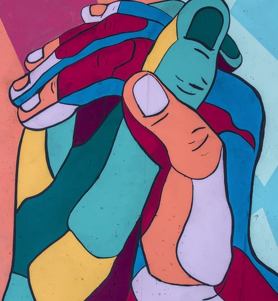

May 29th 2020, 5:51:08 pm EDT

Listen
Our minds constantly construct boundaries,
and constantly try to make us comfortable.
But in an evolved world this works against us,
it creates boundaries across which we hope to discharge pain.
The source of the pain is poverty, poverty of mind and wallet,
fear, pain, unfairness and inequality, add to the blindness.
There is no solution on the level where poverty reins,
it will always be walls turning people against each other.
We are not ready for the next level,
in the next level we recognize poverty as a virus.
We see it as a Natural Disaster,
we sit back, relax, calm down, print enough money to end it and move on.
This does not mean everyone is going to be rich,
it only means, nobody will be stuck in financial poverty.
Poverty of mind, the other half of poverty is not even up for discussion,
not until everyone has a safe home.
All of this seems impossible, to many laughable,
irrational, infantile, unfair even.
For those of you who don't understand how someone could possibly call this unfair,
some will angrily yell "Why should someone get a free home, when I worked for mine, my entire life?".
This is the Nature of the Walls,
the picture of the great divide.
A divide between who we are today,
and who we should be tomorrow.
A Human Being is so special,
that they may not exist without their own Home, not just a house.
So special, that active countermeasures must be put in place,
to help people move away from bad ideas.
A Human Being is so special, that they must never grow up in fear,
that they must never be lied to, never manipulated.
They must never be pressured, never become stressed or depressed,
minds are delicate and must be protected.
We can't see that, because the walls are invisible,
we often can't see that with which we grow up with.
Emboldened we dare to hold up our opinion,
as if it was on par with a Great Being's carefully observed fact, or wisdom.
Crushed, stressed, pressured, tired,
we temporarily lose our mind.
The thing that makes Humans Special,
can be turned off by tiredness and stress.
And our brains go into Stupid Mode,
A versus B, A lesser/better B.
And it seems like we are still operating,
but that's just an illusion, that not us, at all.
I don't know how long it will take us to see how special we are,
how many gaps need to be crossed, or how many upgrades our Cultures need.
I know that divided, the generations will always fight across pointless walls,
and I know that without unity, the world will not progress.
The children are watching,
they are always watching.
They will emulate what they see,
they will accept it as reality.
They will add to the invisible walls,
and dismiss others to discharge pain, or stress.
We can't have a discussion about any of this,
until stress of poverty is out of the picture.
It will be one of the Humanity's greatest achievements,
to help everyone wake up to a home, with enough food, and a world that cares.
Until that moment comes,
we can't have a conversation with all.
Whether we are ready to know it, or not,
the way the world grows... it's either all of us, on none.
May 28th 2020, 9:19:47 pm EDT

Listen
Today was my day of rest,
and then I went jogging to run another test.
I got really tired after my run,
but I said "Not until I write my poem, will I be done."
Earlier I wrote a little programs to make art
overall it was a really good start.
I woke up at six in the morning,
and jumped out of bed without a warning.
Now the hour nears eleven,
getting into my bed will feel like heaven.
I am not sure how I feel about staying up late to write my rhyme,
but there is something sweet about writing just before bed time.
May 27th 2020, 10:23:32 pm EDT

Listen
Call me Ishmael.
Some years ago—never mind how long precisely—having
little or no money in my purse, and nothing particular to interest me
on shore, I thought I would sail about a little and see the watery part
of the world. It is a way I have of driving off the spleen and
regulating the circulation.
Whenever I find myself growing grim about
the mouth; whenever it is a damp, drizzly November in my soul; whenever
I find myself involuntarily pausing before coffin warehouses, and
bringing up the rear of every funeral I meet; and especially whenever
my hypos get such an upper hand of me, that it requires a strong moral
principle to prevent me from deliberately stepping into the street, and
methodically knocking people’s hats off—then, I account it high time to
get to sea as soon as I can.
This is my substitute for pistol and ball.
With a philosophical flourish Cato throws himself upon his sword; I
quietly take to the ship. There is nothing surprising in this. If they
but knew it, almost all men in their degree, some time or other,
cherish very nearly the same feelings towards the ocean with me.
Moby Dick, or The Whale A BBC Radio Classic Drama
Moby Dick; The Whale by Herman Melville Audiobook on Librivox
Moby Dick; The Whale by Herman Melville on Project Gutenberg
May 27th 2020, 8:59:04 pm EDT

Listen
I've been sitting here for half an hour,
trying to conjure up my poetic power.
But nothing seems to be coming out,
I think I am going through a poetic drought.
I guess this happens every once in a while,
so it is not a reason not to smile.

But I thought I was already better than that,
I felt like the world's most poetic cat.
Now I struggle to come up with the next line,
though I promise not to whine.
Maybe, there is way to break through by block,
perhaps I should stop staring at the clock.

Oh yes, this worked, I feel much better meow!
I remembered every word, wow!
Wig, pig, pear, bear, sled, bed, boat, goat,
top, mop, wall, ball, duck, truck, mouse house, and blouse.
And what a story that would rhyme,
had I not ran out of time.

May 26th 2020, 6:10:52 pm EDT

Listen
Not Until This, Not Until That
Don't let anybody push you around,
If you allow negativity towards you for long enough,
it will make you very ill.
Tolerance of negativity will push you to cross lines,
it will derail you the same way that lies derail liars.
It is like the lines that addicts cross,
until there is no way to come back.
Take a look into the mind of the person negative towards you,
do they even see you as a person?
If their ultimate aim is not to rob you of yourself to turn you into a tool,
then are you not some disposable mean to their shortcuts.
Nothing is found in servitude, it won't make you stronger,
it won't make you nobler, or enlightened, or worthy.
Protect your mind, reject being pushed around,
stand up, rise, do not follow, no one has any control over you.
You become Stronger when you rise,
when you put your feet down on the ground, and push up - to the mountains.
You become Nobler when you break away,
when you let go of those ahead of you, and take your own path to the side.
You become Wise and Enlightened when you stand your ground Memoirs in hand,
when you learn from the lessons on your own path, and by subtle analogy to other paths.
You become Worthy, of Yourself, of Love, of Wisdom, of a house you can call Home,
when you grow protecting who you are, onward to becoming the best You.
Do not be scared, because if you stay scared, nothing will change,
do not let sadness keep you in bed, go to the library first.
Do not let the sick thick stickiness to keep you bound,
most of it is illusion, including the few pleasures you found.
Do net let alligator tears, and hollow souls void of any content howl you back,
you are not part of that world, you never were.
Do not go slowly wandering down their own paths, that's how they were created,
and you can still reject that agony and become free.
Look to the best within you, your Beautiful Treasures,
your Innocence, your Sweetness, your Love, your Cuteness, your Generosity, your Might, your Endurance.
Those are powerful treasures meant to help you become a Great Being,
treasures that they have forsaken in their own selves.
Now they are trying to forsaken your own treasures, to fuhrer the dark path they dig,
do not let them take what is irreplaceable within you.
You cannot aid them in any way, that can only feed their evil,
and take away from your Beautiful Treasures.
Let the world see you, read at the Library, visit Museums and Art Galleries,
go see someone singing with their beautiful voice.
Write in your journal, record on your phone, sharpen your pencil,
use tracing paper to learn how to draw.
Step after step courageously walk down the isles to get your first air dry clay,
and sculpt, sculpt your world, and touch, and feeling, show the world.
Do not hide, reject the bad, and shine among the crowds,
do not let your older-self cry that you were never seen.
May 25th 2020, 8:17:07 pm EDT

Listen
Philosophy, and her Daughters the Sciences, are a way to put ourselves to words,
they are a means of storage, transfer, and communication.
Philosophy is a thin outer layer of the Human Mind,
of the Human Condition, of the Raw, Unleashed, Human Consciousness.
Within, Rises The Human,
The Source of Raw.
The only flaw,
is us becoming convinced we are small.
That's why we have each other,
I remind you, you remind your granddaughter, she reminds those in need.
And the Triumph continues,
The Triumph, is an unbroken line through the past.
Like an eraser it runs over nations that take freedom,
wiping out corrupt politicians for the specks of dust they are.
It a bone shaking scream it runs through the blind judge,
it strikes nightmares in those who treat men as animal.
It pierces the hearts of animals that recruit unprepared kids to teach them how to become "men" in war,
it carves, the predatory weapon manufactures that turned air to acid for a profit.
It strikes right through the slavers burning them to dust,
the lawless beg in their last moments as the village heroes rise.
And the wolves run and hide under our very own blankets,
made of the snarling bear skins from last week.
History of the Human Kind,
will always be writ and washed by prevalent powers.
But that will always be a surface story,
because in the face of the future the truth is always revealed.
You are easily capable of becoming countless times more,
than the heroes described in the books.
By subtle analogy to whatever our triumphs are,
we can see all the other triumphs for what they really were.
By the very power that expands our wisdom,
we grow to no end.
May 24th 2020, 10:05:06 pm EDT

Listen
Watch The Jogging Video on YouTube
Visit The Research Post that explains the program behind this little poem.
I wrote a new workout program, Holy Molly,
surely this will turn out to be another folly.
It will make me jog fast like lightening,
I think a lot of people will find my wobbles very frightening.
Certainly it will make me dance in the streets,
as I shuffle and jog to my favorite beats.
And it already crossed my mind to jog with a tail,
but I don't want all the quarantined people to go even more pale.
I just executed the program and it said: play-list done,
so I am already stretching my drumsticks for the run.
The play-list is several hours long,
it will surely make me very strong.